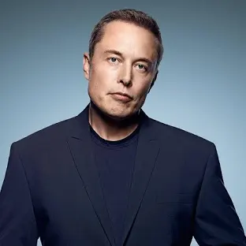
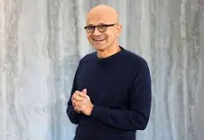

History of Techcon
Tech Con, short for Technology Conference, began as a modest gathering of tech enthusiasts and industry professionals in the early 2000s. Initially hosted in a small venue, the event aimed to provide a platform for sharing ideas and innovations in the rapidly evolving tech landscape. Over the years, Tech Con expanded significantly, attracting major tech companies, startups, and influential figures in the industry. It became a hotspot for unveiling cutting-edge technologies, networking, and discussing the future of tech. Today, Tech Con is a globally recognized event, drawing thousands of attendees from around the world, and is known for its keynote speeches, workshops, and exhibitions showcasing the latest advancements in technology.
Mission of the Tech con conference
The mission of the Tech Con conference is to foster innovation and collaboration within the technology sector by providing a dynamic platform for industry leaders, entrepreneurs, and enthusiasts to share knowledge, showcase cutting-edge technologies, and discuss emerging trends. Tech Con aims to inspire and empower attendees by facilitating meaningful connections, offering insightful keynote speeches, and presenting hands-on workshops. The conference strives to drive the tech industry forward, encouraging the development of transformative solutions that address global challenges and improve the quality of life.
Past Speakers

Elon Musk
Elon Musk, born on June 28, 1971, in Pretoria, South Africa, is a visionary entrepreneur and engineer. He moved to the United States to attend the University of Pennsylvania, earning degrees in economics and physics. Musk co-founded Zip2, an online city guide sold to Compaq for nearly $300 million, and later founded X.com, which became PayPal and was acquired by eBay for $1.5 billion. As CEO of Tesla, Inc., he revolutionized the electric vehicle market with innovative designs and sustainable energy solutions. At SpaceX, Musk made significant advancements in space exploration, including developing the Falcon and Starship rockets and launching the first privately-funded spacecraft to the International Space Station. His ventures also include Neuralink, focusing on brain-computer interface technology, and The Boring Company, aimed at reducing urban traffic through underground tunnels. Musk’s ambitious vision continues to drive technological advancements and inspire innovation across various industries.

Satya Nadella
Satya Nadella, born on August 19, 1967, in Hyderabad, India, completed his bachelor's degree in electrical engineering from Manipal Institute of Technology before moving to the United States for higher education, where he earned a master's degree in computer science from the University of Wisconsin-Milwaukee and an MBA from the University of Chicago Booth School of Business. Joining Microsoft in 1992, Nadella steadily rose through the ranks. As CEO of Microsoft since 2014, he has been instrumental in transforming the company into a leader in cloud computing with the development and growth of Microsoft Azure. Nadella shifted Microsoft’s focus to a cloud-first, mobile-first strategy, emphasizing innovation and collaboration. Under his leadership, Microsoft acquired LinkedIn, GitHub, and Mojang (creator of Minecraft), expanding its influence in the tech industry. His emphasis on a growth mindset and a culture of inclusivity has revitalized Microsoft, making it one of the most valuable and forward-thinking companies in the world.